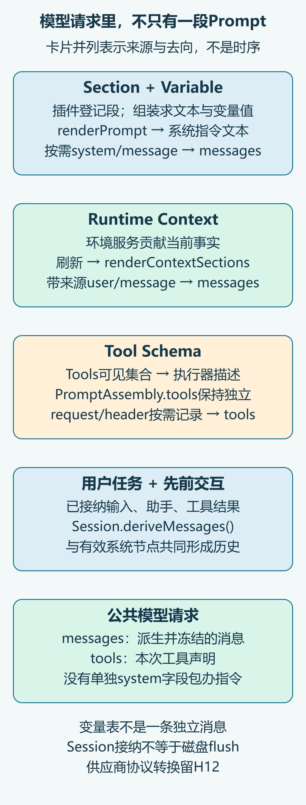
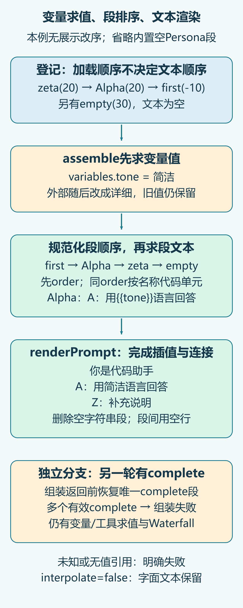
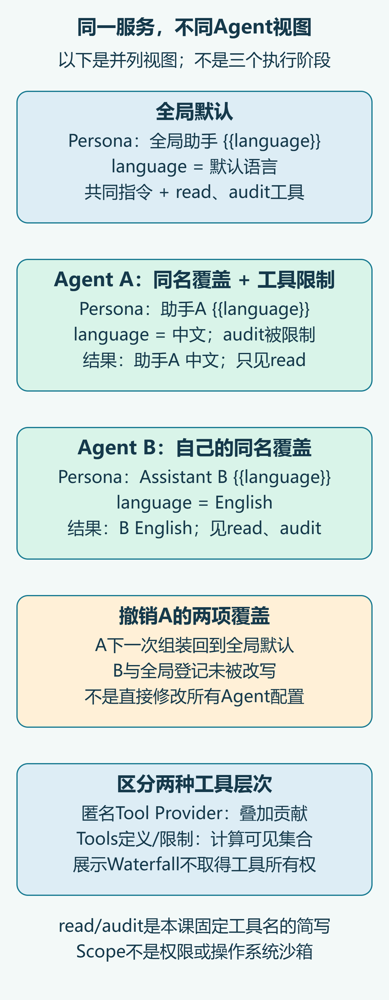
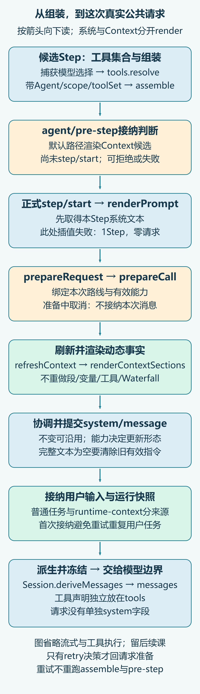

H11 作者审阅页 · 未发布。实际 LessonMarkdown 的静态渲染，折叠答案可展开；课程版本的复制交互已另经 React 挂载测试。图片在本页映射为相邻文件，不改变教材的 /course-media 路径。
System Prompt：从插件贡献到模型真正看到的上下文
170～230 分钟（分三段；作者估算，实际时长待试读，环境准备另计）
代码助手拿到的，究竟是哪一版说明？
仍然使用H10的代码助手：用户说“请读取README，概括项目功能，并检查测试”。为了完成任务，它还要知道自己是什么助手、按什么风格回答、当前目录在哪里、哪些工具可用。工作台又有两个Agent：A要求中文，B要求英文。两者共用模型和工具服务，却不该收到完全一样的任务说明。
最直接的办法，是把角色、目录、工具说明、语言偏好和用户任务全部拼成一个大字符串。开始时很省事；等工具插件增加、目录改变、A的语言切换，谁去改这段字符串？两个插件同时贡献指令，顺序由谁决定？工具被隐藏以后，字符串里的旧说明还在，模型是否仍会以为自己能调用它？如果模板里写了一个根本不存在的变量，是留着花括号继续请求，还是明确失败？
本节只回答一个问题：给定Agent、插件贡献、动态事实和当前工具集合，怎样推导下一次请求实际携带的文本、消息与工具声明？ 交卷时要拿出组装对象、渲染结果和真实公共模型请求三份证据；只打印一段“最终Prompt”还不够。
用六分钟把旧知识接到本题
Stage 4.1的最小Loop中，系统指令描述行为要求，用户消息提交任务，Tool Calling让模型提出结构化调用，应用检查并执行。工具结果还要回交模型。今天不是再写一条循环，而是检查每次判断前收到的材料究竟怎样形成。旧课链接可选，以上回顾足以继续，不假定额外购买权限。
H05已经区分“服务存在”与“向服务登记贡献”：ctx.systemPrompt是取用服务的入口，section()是在已有服务中增加一项贡献，并非再创建一个SystemPrompt服务。插件挂载时登记，贡献方退出时由对应Effect撤销。H06的Waterfall通过next()进入下游，再把结果返回外层；监听器必须按具体事件契约正确await和return。
H09的agent.ctx让感知Scope的注册API取得当前Agent作用域；它不复制所有服务，也不是安全沙箱。H10则给出了时间坐标：候选Step捕获模型选择、解析工具并组装Prompt，然后pre-step判断；正式Step打开后还要准备请求、提交消息、派生历史。Prompt组装不是Loop的全部状态，也不负责管理整份Session历史。 本课只放大这条线上“输入内容怎样确定”的部分。
一次请求的五种材料，不走同一条路
先给助手一个具体输入：固定角色“代码助手”，回答风格“简洁”，当前目录/fixture/project-a，工具read_fixture，用户任务“概括README”。把它们都叫Prompt，会失去来源与处理阶段。
| 材料 | 谁生产、何时处理 | 去向 | 在本课Loop里怎样记录 |
|---|---|---|---|
| Prompt Section，提示词段 | 插件或部署配置登记；assemble求文本，renderPrompt插值 | 有序系统指令文本 | 按需以system/message节点接纳，再进入派生历史 |
| Prompt Variable，模板变量 | 插件登记Provider；每次assemble求值 | 被引用时替换段/上下文中的占位符 | 变量表不单独写成消息；渲染后的文本可能进入日志 |
| Runtime Context，运行时上下文 | 拥有环境事实的服务登记；组装及接纳刷新时读值 | 独立的完整动态事实快照 | 必要时成为source.kind=runtime-context的user/message |
| Tool Schema，工具声明 | Tools及当前执行器提供可见名称、描述、参数等 | 公共请求的tools声明，后续由Adapter转换 | 按需记录在request/header；不是普通系统文本 |
| Session-derived Messages，会话派生消息 | Session从已记录事实和当前有效消息视图派生 | 公共请求的messages，包含系统、用户、助手、工具等 | 原事实保留；派生列表不是把全部事件直接发给模型 |
用户本次任务由输入接纳产生普通user/message。动态事实也可能使用user角色，但它带有不同来源，不代表用户又亲手输入了一条消息。系统指令则是messages里的system角色节点。角色、来源和协议工具声明要分别检查，不能仅数聊天气泡。

SystemPrompt服务管理这些贡献，完成一次组装并提供渲染函数；它不直接请求模型、不执行工具，也不把注册表整体持久化。请求配置和其他已有历史仍由Loop/Session处理。主契约见PromptPresentation/PromptAssembly，125–134行。
Section：先决定谁参与，再决定先读谁
Prompt Section是一段有名字、有位置的系统指令。它解决多插件共同供稿时“怎样定位一段、怎样确定先后”的问题。注册形状在PromptSection，53–75行：
ctx.systemPrompt.section({
name: 'course:answer-style',
order: 20,
text: '请用{{tone}}语言解释代码。',
})这是实际API片段，前提是当前ctx已能访问SystemPrompt；完整装配在实践部分。name用于同名识别和作用域覆盖，order是有限数值，text可以是字符串，也可以是接收AssembleContext并同步返回字符串的Provider。Provider可以依据Agent、模型选择或工具集合决定文本，每次assemble重新求值；不是后台自动监听一切状态。
同一层重复登记同名段会失败，不会静默拼两遍；不同作用域可以用同名段遮蔽全局默认。先合并有效名字，再按order升序，order相同按名称的代码单元顺序。这不是拼音顺序、不是按界面语言localeCompare，也不是插件加载先后。见section()，483–491行与比较函数247–259行。
例如先登记zeta(20)、再登记Alpha(20)、最后登记first(-10)，默认渲染顺序仍是first→Alpha→zeta。空字符串段在组装对象里可以存在，render时才删掉；只含空格的字符串长度不为零，不会被自动trim掉。组装对象的段数与最终可见段数因此也可能不同。
默认身份、Persona与第一方贡献的位置
固定版集中分配的几个位置如下。仓库自带贡献方通过getSectionOrder取值，外部贡献可以使用其他有限数值。
| 分配 | order | 含义与条件 |
|---|---|---|
| HARNESS_IDENTITY | -1000 | 默认固定身份；includeHarnessIdentity=false仅省略这一段 |
| DEPLOYMENT_PERSONA_PREFIX | 0 | 部署personaPrefix，对应deployment:persona-prefix |
| 工具指导、SDK、结构化输出等 | 例如1000、5000、9900 | 只有相应贡献方实际挂载并贡献文本才存在 |
| HARNESS_SOURCE / WEB_SURFACE | 10000 / 10100 | 相应来源或表层贡献的位置，不是所有Profile必有 |
| DEPLOYMENT_PERSONA_SUFFIX | 10200 | 部署personaSuffix，对应deployment:persona-suffix |
默认身份文本是“You are an AI agent powered by DeepSeek Harness.”；prefix/suffix默认文本为空，但注册位置仍存在。实际配置、作用域覆盖、外部更早的order、Waterfall和complete都会影响结果，不能把某个部署的整篇Prompt说成所有Profile固定内容。依据在位置表136–170行及构造器450–473行。
complete：拥有整篇指令，但没有绕过所有组装工作
complete: true表示该有效段要作为完整系统提示词，而非再加一段。先完成作用域同名覆盖，再数有效complete段；超过一个就让assemble失败。只有一个时，服务仍求值变量、工具与各段文本，仍运行Waterfall，然后把保存的那一段恢复为唯一sections项。其他注册没有被永久删掉，其他Provider抛错也不会因有complete就自动跳过。
这里“恢复原段”指保留它求值后的文本及interpolate选择，不代表最终字节永远不受变量影响。实践A的complete文本是完整指令：{{tone}}，Waterfall把变量tone改成“确定”，最终仍渲染为“完整指令：确定”；它不能靠返回另一段来替换这个complete段。见657–693行。
Variable：取到值，与把值写进文本，是两个时刻
Prompt Variable是可复用的模板值。比如多个段都要写回答语言，插件可以登记variable('tone', provider)，段里用{{tone}}引用。变量名按[a-z][a-z0-9_]*匹配；Provider接收本次组装上下文并返回字符串或undefined。变量登记不是马上插值，字符串里的花括号也不是任意JavaScript表达式。
按实践A推导：注册时tone变量的Provider会读取一个可变值；assemble时读到“简洁”，收下这次变量表，并取得Alpha的文本A：用{{tone}}语言回答。即使随后外部值改成“详细”，对旧assembly调用renderPrompt仍得到“简洁”；重新assemble才会得到新变量值。
登记Provider → assemble求得 variables.tone="简洁"
→ sections里的{{tone}}仍保留
外部值改为“详细” → render旧assembly仍输出“简洁”
重新assemble → render新assembly才输出“详细”这就是assemble与render分开的直接证据：前者收集、求值、排序和协作变换；后者拿已接受的数据做严格插值、删空段、用空行连接。renderPrompt是模块导出函数，不是ctx.systemPrompt.renderPrompt()方法。看variable()，566–574行与renderPrompt()，295–300行。

严格失败，避免把坏指令带到模型前
| 输入 | 固定实现的结果 | 应怎样修复 |
|---|---|---|
{{cwd}}却没注册cwd | render报unknown prompt variable | 删除错误假设；目录改走对应Context服务 |
注册absent但返回undefined，再引用{{absent}} | render报has no value | 提供当前场景真实值，或让不适用的段返回空文本 |
{{ tone }}、无效完整括号组 | render报malformed reference | 使用精确合法名字，或整段interpolate=false保留字面量 |
interpolate: false且文本是{{cwd}} | 原样保留，不查变量 | 仅用于确需字面花括号的文本，不能当作补出了目录值 |
未知、无值与格式错误是不同诊断。实现只解析完整的简单{{name}}组，不重新扫描替换值；一个没有后续}}的孤立{{保留字面文本。严格规则见345–381行。不要把“严格”过度概括成“任何出现花括号都失败”。
cwd不是Loop内置变量。 固定Loop只登记provider和model，使用本Step捕获的选择；当前模型的全部能力不会自动变成模板变量，步骤工具集合与准备后的调用能力各走自己的接口。生产中的工作目录由WorkingDirectory服务登记required、interpolate=false的Context，避免目录名里的花括号被当作模板；见Loop 337–338行与WorkingDirectory 90–95行。官方测试可以自行注册cwd，不能因此反推它内置。
我们的分析：拼错模型名、缺失目录值时显式失败，比带着未知占位符继续更容易诊断；但插值成功只证明文本形成，不证明指令语义正确。普通模板也不构成权限检查。
第一段停顿（约50～65分钟）： 合上源码，用first/Alpha/zeta推导最终顺序；再画出变量求值与插值两个时刻，解释一个complete和两个complete的区别。第二段进入动态事实、作用域与请求提交，约50～65分钟。
Runtime Context：今天的目录，不该永远粘在固定角色后面
系统指令回答“怎样做”，动态上下文回答“此刻有哪些运行事实”。把当前目录永久写进角色字符串，目录变了就容易留下过期文本，还会改动本来稳定的指令前缀。Context贡献让事实由拥有它的服务提供，与固定段分开处理；这不是把System Prompt改一个名字，也不是H19的上下文压缩。
实际API是ctx.systemPrompt.context({name, order, text, interpolate?, required?})。text同样可以动态求值，Context按order升序收集；相同order保留收集顺序，源码没有套用Section的名称比较规则。避免把两套排序混为一谈。renderContextSections()将每项渲染成带name的文本，删掉长度为零的项；joinContextSections再生成一份声明“当前快照覆盖先前运行时快照”的完整文本。它不会把这些事实自动加在renderPrompt末尾。见335–342行及673–680行。
抑制可选事实，不是关闭事实所属服务
includeRuntimeContext: false在全局安装抑制器；通过agent.ctx调用suppressRuntimeContext()只抑制对应作用域的可选贡献。多个抑制器独立持有Disposer，撤掉其中一个不代表全部解除。有效注册项标记required=true时仍参与；组装阶段会跳过被抑制的可选Provider，并在Waterfall之后过滤非required名字的Context。
required不是把事实升级为授权。抑制目录显示也不是把文件服务关掉，保留必需目录也不赋予读写权限。它只规定这类运行事实在组装/刷新中的保留规则。纯展示Waterfall如果删掉必需项，后面的refreshContext还会按有效注册补回；不能把仅看一次assembly当成最终接纳结论。
refreshContext到底重新做了多少工作？
实践B先接纳目录project-a、可选环境标签和Waterfall额外说明，再把当前值改成project-b。刷新后目录和注册的环境标签更新；Section、工具Schema、变量表以及仅由Waterfall加入的说明保留接纳值，组装监听器不再运行。变量fixed还保留project-a，因而系统文本可以仍写旧变量值，动态事实快照却已写project-b。这正说明会变化的事实应放在哪类Provider。
准确规则在refreshContext()，587–607行：遍历传入assembly已经接纳的Context名字，当前仍有同名有效注册就重新求文本，没有则保留其接纳文本；按当前抑制规则移除可选项；最后补入缺失的required注册。它不会扫描并加入所有新可选注册，也不重做工具选择、变量求值、Section求值或Waterfall。
解除抑制后，重新assemble能收集当前全部贡献；拿原始accepted对象刷新，也能恢复它本来接纳过的可选项。如果把已经过滤掉可选项的suppressed对象再交给refresh，缺失的可选名字不会凭空回来。实践B把这两个输入并排展示，避免把“撤销抑制器”误解成“任何旧对象都会自动恢复全部内容”。
工具Schema：描述能力的声明，由工具提供方负责
工具注册包含真正执行定义和输出约定；Tool Schema只是其中面向模型的名称、说明、参数等声明。Prompt服务不会因为收到一份Schema就制造一个可执行工具。真实Tools服务自己登记Tool Provider，选中的执行器将当前定义投影为Schema，见ToolsService 111–117行与原生describe 15–17行。
候选Step先用Agent、模型选择与signal解析本次工具集合，组装时再携带同一个toolSet。Scope下的全局工具限制、同名局部定义和步骤条件会影响这次Schema；完整选择与执行生命周期留H13。这里至少要知道：可见集合是一个明确输入，不能把“注册表里存在”直接说成“这次模型一定看见”。
toolOrder决定声明顺序，不增加工具
省略toolOrder时，Schema默认按名称代码单元顺序排列。显式配置必须恰好含一个<unlisted-tools>，这是“把没有显式列出的可见工具按名称插入此处”的标记，不是实际工具名。重复项、没有rest标记在加载时失败；拼错未知工具名在assemble时失败。提供方若把这个保留标记当真实工具名返回，也会失败。见213–245行。
提供方返回的knownNames是限制前名称全集，schemas是本次可见子集。配置列出一个已注册但当前隐藏的工具，可以正常缺席；配置拼出typo则必须诊断。列表里的名字不是授权请求，不能靠toolOrder把隐藏工具拉回来。
工具说明段与Schema也是两条贡献。隐藏工具不意味着任意静态文字会被自动改写。依赖工具的指导应像实践D那样，在Section Provider里用ctx.tools.get(name, scope, toolSet)决定是否返回文本；否则可能出现“Schema已经没有，旧说明仍声称可用”。
Waterfall能改展示，不能接管工具所有权
system-prompt/assemble签名接收PromptPresentation（sections、contexts、variables）、AssembleContext和next，不把tools数组交给展示监听器。服务先收集并排序工具，之后再把自己保留的tools放进最终PromptAssembly；监听器额外返回一个伪造tools字段也不会替换它。参数Schema还经过结构化复制，避免改动某次组装污染提供方原对象。见639–693行。
没有complete时，Waterfall返回的展示文本是权威结果，可以增删或重排段、修改变量，也可按契约短路。服务不会在它返回后再次替文本排序；默认注册排序不是对可信展示插件的不可修改限制。有complete时才恢复那一段，仍保留变换后的变量等数据。按H06写正确的三参数形式：
ctx.on('system-prompt/assemble', async (presentation, context, next) => {
const accepted = await next()
return { ...accepted, variables: { ...accepted.variables, tone: '简洁' } }
})这是展示变换片段，需保证后续实际使用tone；不能把中间参数context误当next。模型看见Schema也不意味着任意参数、任意状态下无条件执行；后面还有工具侧检查，H13–H15会展开。Scope与Prompt本身都不构成执行安全沙箱。
两个Agent共享服务，为什么得到不同指令？
实践C让全局Persona为全局助手：{{language}}，全局language为“默认语言”；A通过agent.ctx用同名Persona段和变量覆盖，得到“助手A：中文”；B得到“Assistant B: English”。共同的资料依据段仍参与两者。A隐藏audit_fixture，B仍可见它。
| 观察位置 | 系统文本开头 | 本实践配置下的工具声明 |
|---|---|---|
| A | 助手A：中文 | read_fixture |
| B | Assistant B: English | read_fixture、audit_fixture |
| 不指定scope的组装 | 全局助手：默认语言 | 全局可见集合 |
同名作用域覆盖是在该次视图里选局部贡献，未改写全局配置。撤销A的局部Section与Variable后，A下一次组装回落到全局默认，B不受影响。作用域监听器也只参与匹配的组装；change是注册表变更通知，刻意不按同样方式筛选。

还要分清两种“工具覆盖”：SystemPrompt的Tool Provider是匿名贡献，全局与匹配作用域的提供方一起参与；具体工具定义是否同名覆盖由Tools服务处理。中文README的“带作用域贡献遮蔽全局”概括不能套到所有匿名Provider。本课C18专门验证两份Provider叠加，D09再验证真正两个Agent的工具可见集合。
变量与段的求值也有细节差异：Section先按同名合并，隐藏的全局文本Provider不求值；变量实现先求全局值，再从远到近求作用域值，近层结果覆盖同名值。不要在Provider里放不必要的副作用，也不要推断“变量被覆盖，所以全局Provider一定没执行”。
assemble的真实顺序：从登记记录到接纳对象
读assemble()，619–693行时，把它拆成五站，而非背一长串名词：
- 根据scope取得全局和匹配层，计算抑制状态；求全局变量，再求由远到近的作用域变量。
- 合并有效Section/Context定义；收集全局与匹配作用域Tool Provider，复制参数Schema并收集knownNames。
- 对Section排序、检查多个complete、求各段文本并保存complete副本；规范化工具顺序。
- 对Context应用抑制、按order排序并求文本，形成只有展示字段的对象；等待作用域筛选的Waterfall。
- 将提供方持有的tools装回结果，必要时恢复complete、过滤被抑制的Context，返回PromptAssembly。
此处没有把工具执行函数交给模型，没有把变量表直接写入Session，也没有完成所有插值。下面是实践A真实对象的局部摘录，省略内置空Persona段、zeta和empty项，只保留能看出阶段差异的字段：
{
"sections": [
{"name": "first", "text": "你是代码助手"},
{"name": "Alpha", "text": "A：用{{tone}}语言回答"}
],
"contexts": [],
"variables": {"tone": "简洁"},
"tools": []
}renderPrompt使用其中的sections与variables才得到系统文本；renderContextSections处理contexts；tools保持独立声明。Provider抛错、多complete、toolOrder错误可以让assemble失败；未知占位符则通常到对应render函数才报错。文档把它们概称“组装失败”便于使用，精读时仍要分清实际阶段。
系统文本如何真正进入下一次请求
现在接回H10，但不重复Turn调度。顺着固定Loop核对preStep 283–317行、step 435–479行：
- 候选Step捕获模型选择、解析toolSet、调用assemble，再做agent/pre-step；默认接纳逻辑会先渲染Context候选。
- 正式step/start之后，先renderPrompt取得本Step系统文本，再进入请求尝试循环。
- prepareRequest经中间件和prepareCall绑定本次有效调用能力；成功后refreshContext，再renderContextSections得到当前事实。
- SystemPromptProjection据本次能力、序列与文本产生system/message操作，Loop显式提交；再接纳用户输入与动态快照。
- buildRequest按需记录请求头/上下文，从Session.deriveMessages派生并冻结messages，和工具声明等一起交给模型边界。
因此，renderPrompt在prepareCall之前，动态Context刷新/渲染在其后。不是所有render都在同一时刻。当前调用的刷新参数带同Agent/scope/signal和模型选择，源码没有重新传入候选toolSet，更没有重新做工具选择。重试仍使用接纳的assembly，但动态事实可以每次尝试刷新。

SystemPromptProjection只是返回提交候选，实际append在Loop；模型请求没有一个单独system字段包办全部指令。系统文本通过有效system消息节点进入messages，工具通过tools进入请求，动态事实通过带来源user快照进入messages。依据在buildRequest()，656–743行。这份公共对象不是供应商HTTP报文，后续转换留H12。
提示词变化，不一定新增或改写同一种节点
固定协调规则见SystemPromptProjection.project()，93–114行。按实践D推导变化；P1/P2是脚本“指令第一版/第二版”的简写：
| 条件 | 公共历史中的有效系统消息 | 会话记录的含义 |
|---|---|---|
| 首次P1 | P1 | 追加首个系统节点；即使初始为空，也会预留空节点 |
| 文本未变 | 沿用 | 未必新增system/message，不是每个Step强制重复 |
| 不支持in-history，P1变P2 | 当前有效文本归并为P2 | 用新的替换操作协调已有节点，旧日志事实仍保留 |
| 支持in-history且序列延续，P1变P2 | P1、P2按历史位置保留 | 将非空更新追加到已有历史之后 |
| 新序列但有效文本没变 | 可保留原来的历史内版本 | 不能说“一开新序列就必然重写头节点” |
| 新序列且有效文本变化 | 归并当前指令 | 清空旧尾节点并协调首节点 |
| 完整渲染为空 | 不保留任何旧有效系统文本 | 对生效系统节点记录空内容替换；后续仍为空不重复提交 |
“替换有效节点”不等于改写旧事件字节，也不等于替换整份模型历史。in-history是本次prepareCall给出的能力；不能只凭上一次request/context或一个模型名字猜本次能力。本课分别实跑plain和in-history路线、显式新序列与空文本，未运行所有切换/恢复组合。
动态事实另有协调：值不变可不新增快照，变化时提交新的完整快照；从有内容变为空，会用清除说明表明先前运行时快照不再适用。旧事实仍在日志，历史里可能保留旧快照与新的覆盖说明；不能说刷新会删除旧user消息。看RuntimeContextProjection 151–167行，完整事件投影与压缩留H17/H19。
失败与取消要落在实际阶段
| 本课故障位置 | Step数 / 实际模型请求数 | 输入/系统消息与结尾 |
|---|---|---|
| toolOrder未知名字 | 0 / 0 | assemble失败，未接纳本次消息，Turn error |
| Context未知占位符 | 0 / 0 | 默认pre-step渲染候选时失败，Turn error |
| Section里的未知cwd | 1 / 0 | 正式Step内renderPrompt失败，尚未prepare请求或接纳消息，Turn error |
| assemble监听器等待时取消 | 0 / 0 | 放开自制等待门后检查signal，Turn aborted |
| agent/request等待时取消 | 1 / 0 | 未完成准备，不提交本次系统/用户消息，Turn aborted |
这些都是先确认Turn开始后的夹具。assemble服务本身不会强制打断任意Provider或Promise，Loop在await边界检查signal；实验明确释放等待门。没有读到一条Assistant文本不代表没有Turn，whenIdle返回也不证明任务成功。Session接纳仍只证明本课内存日志接受事实，磁盘flush未验证。
Token与缓存：能解释影响因素，不能凭源码报节省比例
通常系统文本越长、工具Schema越多，模型请求要携带的材料越多；但字符数不是Token数，不同模型、序列化和分词会改变结果，最终费用也由提供方规则决定。固定README的成本与前缀分析150–170行可作为讨论入口；本课没有真实usage数据，不把字符串长度或Mock请求次数改称精确Token成本。
稳定的指令与声明顺序，有机会保留请求中相同的前缀。动态变量在靠前段改变、工具集合或排序改变、Persona配置变化，都可能使前缀从较早位置不同。把动态事实放到历史尾部快照、在支持能力时追加非空系统更新，可以在公共messages层保留先前内容；这解释了源码为什么提供不同更新形态，但不证明某个供应商已经缓存或命中。
这里分四层：源码确认排序、文本和节点怎样形成；我们的分析解释哪些改动会改变输入前缀；Adapter和模型提供方决定最终协议与缓存行为；性能结论需要用真实请求、usage、延迟与命中信息测量。本课没有成本节省百分比、KV Cache命中率或延迟承诺，也没有把Prompt组装等同上下文压缩。
第二段停顿： 画出系统文本和动态事实的两条render线，再比较“plain更新”“in-history更新”“清空”三种历史。第三段约70～100分钟，运行四项实践，用输出检验自己的预测，而非只看PASS。
实践准备：运行真实组件，固定替代外部数据
在AI Foundry仓库根执行本课运行器：
node docs/deepseek-harness-v2/h11/scripts/run-labs.mjs它先核固定源码字节与隔离依赖，再把lab复制到新系统临时目录，通过tsx加载锁定实现；不会在本项目安装Harness依赖。Node本次24.16.0，Zod锁4.4.3。首次复现需按审阅包README准备源码Git缓存和隔离依赖，可用HARNESS_SOURCE_CACHE、H11_DEPS_ANCHOR、H11_ZOD_ANCHOR指定路径。不能拿另一个版本凑运行，也不要求使用真实Key。
本轮40项为C25个真实SystemPrompt组件用例、D15个真实Loop局部集成用例。A/B/C/D是下面实践名称，和证据等级不同。独立算法模拟、独立Cordis专项、完整应用E没有运行；真实Cordis包含在C/D中，不重复计数。错误答案负例预期非零，表示检查能识别“assemble已经插值”的误答，不是改坏官方源码再求绿。
完整输出在审阅包evidence/practice-output.json，保留A、B、C及各D场景的assembly、文本、消息、工具和事件；TAP及原始stdout/stderr另存。随机id与时刻保留真实值，语义和脚本结果确定，不承诺跨运行逐字节相同。目录字符串只是夹具变量，不切换OS目录，不挂生产WorkingDirectory服务，更不读取私人文件。
想深入再看：完整公共准备：support.ts
// 真实服务装配改编自固定官方测试；模型只用官方MockAdapter，工具只返回固定文本。
import { Context } from '@deepseek-ai/cordis';
import AgentRegistry from '@deepseek-ai/dsh-agent';
import AgentLoop from '@deepseek-ai/dsh-agent-loop';
import LlmRuntime, { createUserMessage } from '@deepseek-ai/dsh-llm';
import SessionStore, { SessionId } from '@deepseek-ai/dsh-session';
import SessionProjectionRegistry from '@deepseek-ai/dsh-session-projection';
import SystemPrompt, { type Config } from '@deepseek-ai/dsh-system-prompt';
import ToolRuntime from '@deepseek-ai/dsh-tools';
import * as NativeToolExecutor from '@deepseek-ai/dsh-tool-executor-native';
import { defineContentToolFixture } from '@deepseek-ai/dsh-tool-testkit';
export { Context, SystemPrompt };
export { renderPrompt, renderContextSections, renderContextSnapshot, PERSONA_PREFIX_SECTION, TOOL_ORDER_REST } from '@deepseek-ai/dsh-system-prompt';
export { MockAdapter, textResponse } from './official-mock.ts';
export { LlmError } from '@deepseek-ai/dsh-llm';
export const gate = () => Promise.withResolvers<void>();
export const textOf = (m: any) => m.content?.filter((b: any) => b.type === 'text').map((b: any) => b.text).join('') ?? '';
export const schema = (name: string) => ({ name, description: name + ' fixture', parameters: { type: 'object', properties: {} } });
export async function component<T>(work: (ctx: Context) => T | Promise<T>, config: Config = {}): Promise<T> {
const ctx = new Context();
try { await ctx.plugin(SystemPrompt, { includeHarnessIdentity: false, ...config }); return await work(ctx); }
finally { await ctx.fiber.dispose(); }
}
export async function harness(adapter: any, config: Config = {}) {
const ctx = new Context(), handles: any[] = [], trace: any[] = [];
for (const p of [LlmRuntime, SessionStore, SessionProjectionRegistry]) await ctx.plugin(p as any);
await ctx.plugin(SystemPrompt, { includeHarnessIdentity: false, ...config });
for (const p of [ToolRuntime, NativeToolExecutor, AgentRegistry]) await ctx.plugin(p as any);
await ctx.plugin(AgentLoop, { agents: [] }); ctx.llm.registerAdapter(['fixture'], adapter);
ctx.on('session/event', (session, event) => { trace.push({ channel: 'fact', sessionId: session.id, event: structuredClone(event) }); });
ctx.on('agent/error', ({ agent, error }) => { trace.push({ channel: 'live', agentId: agent.id, error: String(error) }); });
async function create(id: string) { const h = await ctx.agents.create({ sessionId: SessionId(id), agentOptions: { provider: 'fixture', model: 'scripted' } }); handles.push(h); return h.agent; }
return { ctx, trace, create, async close() { for (const h of handles) await h.dispose(); await ctx.fiber.dispose(); } };
}
export async function send(agent: any, text: string) {
agent.followup(createUserMessage({ content: [{ type: 'text', text }], source: { kind: 'user' } })); await agent.whenIdle();
}
export function registerTextTool(ctx: Context, name: string) {
return ctx.tools.register(defineContentToolFixture({ name, description: name + ' 固定文本工具', parameters: {}, async execute() { return [{ type: 'text', text: 'fixture only' }]; } }));
}
export function capture(agent: any, adapter: any, trace: any[]) {
return { events: agent.session.snapshotEvents(), trace: structuredClone(trace), requests: adapter.requests.filter((r: any) => r.sessionId === agent.id).map((r: any) => ({
keys: Object.keys(r), frozen: Object.isFrozen(r) && Object.isFrozen(r.messages) && r.messages.every((m: any) => Object.isFrozen(m)), messages: structuredClone(r.messages), tools: structuredClone(r.tools ?? []),
})), status: agent.status };
}实践 A：排序、渲染与完整提示词
先预测first(-10)、zeta(20)、Alpha(20)、empty(30)的顺序。tone第一次求值为“简洁”，改成“详细”后分别render旧对象与重新assemble，会有什么差异？再判断unknown、missing、malformed、literal与两个complete的结果。
想深入再看：实践 A 完整程序：sections.ts
import { component, renderPrompt, schema } from './support.ts';
export async function sectionsPractice() {
return component(async ctx => {
let tone = '简洁', variables = 0;
ctx.systemPrompt.variable('tone', () => { variables++; return tone; });
ctx.systemPrompt.section({ name: 'zeta', order: 20, text: 'Z：补充说明' });
ctx.systemPrompt.section({ name: 'Alpha', order: 20, text: () => 'A：用{{tone}}语言回答' });
ctx.systemPrompt.section({ name: 'first', order: -10, text: '你是代码助手' });
ctx.systemPrompt.section({ name: 'empty', order: 30, text: '' });
const assembly = await ctx.systemPrompt.assemble(); tone = '详细';
const rendered = renderPrompt(assembly); // 仍用组装时已求值的“简洁”。
const nextRendered = renderPrompt(await ctx.systemPrompt.assemble());
const errors: Record<string, string> = {};
for (const [name, text, missing] of [['unknown', '{{cwd}}', false], ['missing', '{{absent}}', true], ['malformed', '{{ tone }}', false]] as const) {
const disposeVar = missing ? ctx.systemPrompt.variable('absent', () => undefined) : undefined;
const dispose = ctx.systemPrompt.section({ name, order: 40, text });
try { renderPrompt(await ctx.systemPrompt.assemble()); } catch (e) { errors[name] = String(e); }
dispose(); disposeVar?.();
}
const literal = ctx.systemPrompt.section({ name: 'literal', order: 40, text: '{{cwd}}', interpolate: false });
const literalRendered = renderPrompt(await ctx.systemPrompt.assemble()); literal();
ctx.systemPrompt.tools(() => ({ schemas: [schema('read_fixture')] }));
const listener = ctx.on('system-prompt/assemble', async (_a, _c, next) => {
const a = await next(); return { ...a, sections: [{ name: 'waterfall', text: '被替换的展示文本' }], variables: { ...a.variables, tone: '确定' } };
});
const complete = ctx.systemPrompt.section({ name: 'whole', order: 99, text: '完整指令：{{tone}}', complete: true });
const completeAssembly = await ctx.systemPrompt.assemble();
const duplicate = ctx.systemPrompt.section({ name: 'whole-2', order: 100, text: '冲突', complete: true });
try { await ctx.systemPrompt.assemble(); } catch (e) { errors.complete = String(e); }
duplicate(); complete(); listener();
return { assembly, rendered, nextRendered, variables, errors, literalRendered, completeAssembly, completeRendered: renderPrompt(completeAssembly) };
});
}想深入再看：实践 A 详细参考答案
贡献顺序为first、Alpha、zeta、empty；渲染时empty和内置空Persona段消失，输出依次为“你是代码助手”“A：用简洁语言回答”“Z：补充说明”，段间空行。assembly中的Alpha仍有{{tone}}；旧对象render不重新调用变量Provider，新assemble才拿到“详细”。
unknown的cwd从未登记，错误是unknown prompt variable；absent登记但返回undefined，错误是has no value；带空格的占位组是malformed；interpolate=false的{{cwd}}原样保留，不会凭空变成目录。
只有一个complete时，Waterfall试图换掉sections无效，最终只剩whole；变量tone被Waterfall改成“确定”，渲染是“完整指令：确定”，tools仍来自真实Provider。第二个有效complete使assemble拒绝。其他段的文本Provider并未因complete自动跳过，C05另注入同步throw验证失败；这与最终未选段不再插值是两件事。
C01–08覆盖这些行为，negative-answer.ts故意声称Alpha已插值，必须非零退出。建议先在自己的预测表写文本和阶段，再对JSON核对；测试不会自动评价自由解释。
实践 B：动态事实更新、抑制与恢复
预测project-a改成project-b后，系统文本里的fixed变量、目录Context、工具Schema和Waterfall额外说明各变不变。两个抑制器生效，撤一个、再撤另一个，结果怎样？最后分别刷新原accepted和已经过滤后的suppressed，再登记一个新可选项和新必需项。
想深入再看：实践 B 完整程序：contexts.ts
import { component, renderPrompt, renderContextSections, schema } from './support.ts';
export async function contextsPractice() {
return component(async ctx => {
let current = '/fixture/project-a';
const calls = { section: 0, variable: 0, tools: 0, waterfall: 0, context: 0 };
ctx.systemPrompt.section({ name: 'role', order: 1, text: () => { calls.section++; return '固定指令：{{fixed}}'; } });
ctx.systemPrompt.variable('fixed', () => { calls.variable++; return current; });
ctx.systemPrompt.tools(() => { calls.tools++; return { schemas: [schema('read_fixture')] }; });
ctx.systemPrompt.context({ name: 'directory', order: 100, required: true, interpolate: false, text: () => { calls.context++; return 'Directory: ' + current; } });
ctx.systemPrompt.context({ name: 'optional', order: 200, text: () => '环境标签：' + current });
ctx.on('system-prompt/assemble', async (_a, _c, next) => {
calls.waterfall++; const a = await next(); return { ...a, contexts: [...a.contexts, { name: 'expert', text: '仅本次接纳的额外说明' }] };
});
const accepted = await ctx.systemPrompt.assemble(); current = '/fixture/project-b';
const refreshed = ctx.systemPrompt.refreshContext(accepted), afterRefresh = { ...calls };
const dispose1 = ctx.systemPrompt.suppressRuntimeContext(), dispose2 = ctx.systemPrompt.suppressRuntimeContext();
const suppressed = ctx.systemPrompt.refreshContext(accepted); dispose1();
const stillSuppressed = ctx.systemPrompt.refreshContext(accepted); dispose2();
const restored = ctx.systemPrompt.refreshContext(accepted);
const fromSuppressed = ctx.systemPrompt.refreshContext(suppressed); // 被剔除的optional不凭空重新加入。
ctx.systemPrompt.context({ name: 'late-optional', order: 300, text: '新可选项' });
ctx.systemPrompt.context({ name: 'late-required', order: 50, required: true, text: '新必需项' });
const late = ctx.systemPrompt.refreshContext(accepted);
return { accepted, refreshed, afterRefresh, renderedPrompt: renderPrompt(refreshed), renderedContexts: renderContextSections(refreshed), suppressed, stillSuppressed, restored, fromSuppressed, late };
});
}想深入再看：实践 B 详细参考答案
原accepted目录为project-a；refreshed目录/可选标签为project-b，系统指令仍插入旧fixed值project-a。afterRefresh计数为section=1、variable=1、tools=1、waterfall=1、context=2，说明没有重新组装。仅由Waterfall加入的expert文本保持原值。
两个抑制器时只剩required的directory，撤一个仍相同；全撤后用原accepted刷新会恢复它原有的directory、optional、expert。用suppressed刷新却只有directory，因为另两项名字已不在传入的接纳对象中，且不是缺失required。重新assemble是重新收集当前贡献，不能和refresh混称。
late-required(order50)会被补到directory(order100)之前；late-optional不自动进入旧accepted。C12另核includeRuntimeContext=false：可选Provider不执行、Waterfall额外可选项被过滤，required保留。C13还把必需项从Waterfall结果删掉，随后refresh按真实注册补回。这些是内容规则，不是停用了目录或工具服务。
实践 C：两个真实Agent的不同输入
预测A/B的系统文本、工具声明和各自监听器计数。程序创建真正Agent对象，用agent.ctx同名覆盖，A对全局audit_fixture作真实Tools限制。给两者各发一个任务，再撤销A的两项覆盖，观察下一次请求是否回到全局值。
想深入再看：实践 C 完整程序：scopes.ts
import { capture, harness, send, registerTextTool, MockAdapter, textResponse, PERSONA_PREFIX_SECTION, renderPrompt } from './support.ts';
export async function scopesPractice() {
const adapter = new MockAdapter([textResponse('A answer'), textResponse('B answer'), textResponse('A restored')]);
const h = await harness(adapter, { personaPrefix: '全局助手：{{language}}', toolOrder: ['read_fixture', '<unlisted-tools>'] });
try {
h.ctx.systemPrompt.variable('language', () => '默认语言');
h.ctx.systemPrompt.section({ name: 'shared', order: 10, text: '只依据收到的资料回答' });
registerTextTool(h.ctx, 'read_fixture'); registerTextTool(h.ctx, 'audit_fixture');
const a = await h.create('h11-A'), b = await h.create('h11-B');
const sectionA = a.ctx.systemPrompt.section({ name: PERSONA_PREFIX_SECTION, order: 0, text: '助手A：{{language}}' });
const variableA = a.ctx.systemPrompt.variable('language', () => '中文');
b.ctx.systemPrompt.section({ name: PERSONA_PREFIX_SECTION, order: 0, text: 'Assistant B: {{language}}' });
b.ctx.systemPrompt.variable('language', () => 'English');
a.ctx.tools.restrict({ deny: ['audit_fixture'] });
const seen = { A: 0, B: 0 };
a.ctx.on('system-prompt/assemble', async (_v: any, _c: any, next: any) => { seen.A++; return next(); });
b.ctx.on('system-prompt/assemble', async (_v: any, _c: any, next: any) => { seen.B++; return next(); });
await send(a, '同一个任务'); await send(b, 'the same task');
const beforeDisposal = { A: capture(a, adapter, h.trace), B: capture(b, adapter, h.trace), seen: { ...seen } };
sectionA(); variableA(); await send(a, '恢复全局默认');
const global = renderPrompt(await h.ctx.systemPrompt.assemble());
return { beforeDisposal, afterDisposal: capture(a, adapter, h.trace), global };
} finally { await h.close(); }
}想深入再看：实践 C 详细参考答案
A的开头是“助手A：中文”，工具只有read_fixture；B的开头是“Assistant B: English”，按本实践显式toolOrder排列为read_fixture、audit_fixture。共享资料依据段在两者中保留。beforeDisposal.seen为A=1、B=1，作用域监听器没有看到对方组装。撤销A的Section与Variable后，A下一请求是“全局助手：默认语言”；没有改全局配置或B的贡献。
D09验证的是实际Agent与真实Tools；C15–18使用真实Scope/SystemPrompt组件，单独核覆盖求值、监听筛选和匿名Provider叠加，不能把这组组件载体说成完整Agent。C19–23补足toolOrder：默认a,b,z，显式z,rest,a得到z,b,a；已知hidden缺席正常，typo报错；缺rest/重复项加载失败；伪造返回tools不会取代Provider声明。
这里模型脚本直接回答，没有调用这些固定文本工具；工具Schema可见差异已证明，执行授权和完整流水线没有借此宣称全部验证。不要为了“再增加一个Schema”去Waterfall里伪造可调用能力。
实践 D：从组装结果追到公共模型请求
依次看plain、in-history、series、initial-empty、tools、refresh、suppress、context-change与故障/取消/retry。每条场景独立创建夹具Session，模型只用官方固定响应。对照requests里的messages/tools、events里的system/message与user/message，不把普通聊天记录当最终请求的替代品。
想深入再看：实践 D 完整程序：requests.ts
import { capture, harness, send, registerTextTool, gate, MockAdapter, textResponse, LlmError } from './support.ts';
export type RequestCase = 'plain' | 'in-history' | 'series' | 'tools' | 'refresh' | 'suppress' | 'render-error' | 'context-error' | 'cancel-prepare' | 'cancel-assemble' | 'retry' | 'tool-order-error' | 'context-change' | 'initial-empty';
export async function requestsPractice(kind: RequestCase) {
const adapter = new MockAdapter(kind === 'retry' ? [() => { throw new LlmError('busy', 'RATE_LIMIT'); }, textResponse('ok')] : Array.from({ length: 6 }, () => textResponse('ok')));
if (kind === 'in-history' || kind === 'series') adapter.systemPromptUpdate = 'in-history';
const h = await harness(adapter, kind === 'tool-order-error' ? { toolOrder: ['typo', '<unlisted-tools>'] } : {}), agent = await h.create('h11-' + kind), entered = gate(), release = gate();
let prompt = kind === 'initial-empty' ? '' : '指令第一版', current = '/fixture/initial', startSeries = false;
const counts = { section: 0, variable: 0, assemble: 0, context: 0, request: 0 };
try {
h.ctx.systemPrompt.section({ name: 'role', order: 1, text: () => { counts.section++; return kind === 'render-error' ? '{{cwd}}' : prompt + (kind === 'refresh' || kind === 'retry' ? '：{{fixed}}' : ''); } });
h.ctx.systemPrompt.variable('fixed', () => { counts.variable++; return current; });
if (['refresh', 'suppress', 'retry', 'context-error', 'context-change'].includes(kind)) {
h.ctx.systemPrompt.context({ name: 'directory', order: 100, required: true, interpolate: false, text: () => { counts.context++; return current; } });
if (kind !== 'context-change') h.ctx.systemPrompt.context({ name: 'optional', order: 200, text: kind === 'context-error' ? '{{not_registered}}' : 'optional fact' });
}
h.ctx.on('system-prompt/assemble', async (_a: any, _c: any, next: any) => { counts.assemble++; if (kind === 'cancel-assemble') { entered.resolve(); await release.promise; } return next(); });
h.ctx.on('agent/pre-step', async (_p: any, next: any) => { const d = await next(); return d.kind === 'enter' && startSeries ? { ...d, startsRequestSeries: true } : d; });
h.ctx.on('agent/request', async (_p: any, next: any) => {
counts.request++;
if (kind === 'refresh' || (kind === 'retry' && counts.request === 2)) current = '/fixture/updated';
if (kind === 'suppress') agent.ctx.systemPrompt.suppressRuntimeContext();
if (kind === 'cancel-prepare') { entered.resolve(); await release.promise; }
return next();
});
if (kind === 'retry') h.ctx.on('agent/request-error', async () => ({ kind: 'retry' }));
if (kind === 'tools') {
registerTextTool(h.ctx, 'read_fixture');
h.ctx.systemPrompt.section({ name: 'read-guide', order: 2, text: ({ scope, toolSet }: any) => h.ctx.tools.get('read_fixture', scope, toolSet) ? '读取指导：read_fixture' : '' });
}
if (kind.startsWith('cancel-')) {
const work = send(agent, '准备时取消'); await entered.promise; agent.cancel({ kind: 'user' }); release.resolve(); await work;
} else {
await send(agent, '任务一');
if (['plain', 'in-history', 'series'].includes(kind)) {
prompt = '指令第二版'; await send(agent, '任务二'); startSeries = kind === 'series'; await send(agent, '指令不变');
prompt = kind === 'series' ? '指令第三版' : ''; await send(agent, '任务四');
if (kind !== 'series') await send(agent, '仍为空');
}
if (kind === 'tools') {
registerTextTool(h.ctx, 'audit_fixture'); await send(agent, '增加工具后');
agent.ctx.tools.restrict({ deny: ['read_fixture'] }); await send(agent, '隐藏读取工具后');
}
if (kind === 'context-change') {
current = '/fixture/updated'; await send(agent, '环境已变'); current = ''; await send(agent, '没有动态事实'); await send(agent, '仍无动态事实');
}
if (kind === 'initial-empty') { await send(agent, '仍为空'); prompt = '指令第一版'; await send(agent, '现在有指令'); }
}
return { ...capture(agent, adapter, h.trace), kind, counts };
} finally { release.resolve(); await h.close(); }
}想深入再看：统一运行入口：demo.ts
import { sectionsPractice } from './sections.ts';
import { contextsPractice } from './contexts.ts';
import { scopesPractice } from './scopes.ts';
import { requestsPractice, type RequestCase } from './requests.ts';
console.log('A', JSON.stringify(await sectionsPractice()));
console.log('B', JSON.stringify(await contextsPractice()));
console.log('C', JSON.stringify(await scopesPractice()));
for (const kind of ['plain','in-history','series','tools','refresh','suppress','render-error','context-error','cancel-prepare','cancel-assemble','retry','tool-order-error','context-change','initial-empty'] as RequestCase[]) {
console.log('D-' + kind, JSON.stringify(await requestsPractice(kind)));
}想深入再看：实践 D 详细参考答案
plain的五次请求系统文本为[P1]、[P2]、[P2]、[]、[]；in-history是[P1]、[P1,P2]、[P1,P2]、[]、[]。第三、第五次没有新system/message；清空时plain协调一个生效节点，in-history协调两个。旧P1事件还留在日志，旧请求内容也未被后来改变；请求和消息数组实际冻结，且请求没有单独system字段。
series先形成P1/P2两版本，显式新序列但文本不变时保留两者；下一次文本改P3才归并为[P3]。initial-empty先记录一个空system节点，前两次请求没有system角色消息，第三次非空文本再协调该节点；“日志存在空节点”和“模型收到旧指令”不是同一件事。
tools的声明依次为[read]、[audit,read]、[audit]（此场景未配置toolOrder，按名称排列）；按需request/header共三条。工具依赖的读取指导在最后一请求消失，第一请求仍保留原来的Schema与文本。refresh在agent/request把事实改成updated，最终快照用新值，Section变量仍initial；suppress则只保留required目录。
context-change的四次请求只有三条动态快照：initial、updated、清除说明；第四次仍为空不重复提交。旧快照保留在历史，新完整快照声明覆盖旧运行事实；它不是压缩或删除旧日志。
render-error为1Step/0请求；context-error和tool-order-error为0/0，均Turn error且没有本次系统/用户消息。assemble等待时取消为0/0，request等待时取消为1/0，放开门后aborted，消息仍未接纳。retry为1Step/2请求，assemble/Section/Variable各1次，Context Provider共3次（组装1+两次刷新），普通用户输入仅接纳1次；第二请求才看到updated事实。
本实践未运行真实供应商、磁盘flush、压缩、恢复、多工具执行或缓存测量。公共请求与列明事件可查，不把静态分支阅读或一个Mock回答升级成完整应用E。
精读路线：只追能回答本题的五个文件
| 顺序 | 核心文件与选段 | 要写出的解释 |
|---|---|---|
| 1 | system-prompt/src/index.ts：53–134、295–381、483–693 | 登记形状、assemble/render分工、严格失败、刷新与Waterfall边界 |
| 2 | tools/src/index.ts：111–117、199–306 | 可见定义怎样交给描述方；本课止于Schema入口 |
| 3 | agent-loop/src/agent.ts：283–317、435–479、656–743 | 候选、两种render、准备、接纳与冻结的实际先后 |
| 4 | agent-loop/src/runtime-context.ts：68–167 | 系统节点和动态快照各何时不变、追加、协调或清除 |
| 5 | session/src/index.ts：892–911、999–1029 | 事实接纳与派生历史两个接口，不展开全部投影算法 |
路径均在packages/core下。Scope存储、原生执行器、WorkingDirectory、架构/生命周期文档和官方测试为辅助选读。完整固定源码断言在审阅包source-checklist.md：每项记录文件、符号、准确范围、实际用例及证据等级；官方Vitest只选读，未运行整套。字节/行号检查防止漂移，不能代替控制流阅读与真实C/D测试。
十道思考题：先推导，再解释
思考 1：把目录、语言、工具和任务都拼进角色字符串，会失去什么？
想深入再看：思考 1 参考答案
会失去不同材料的所有者和更新边界。目录是当前环境事实，语言可能是部署或Agent指令，工具声明有独立协议表示，任务属于本次用户输入。一个大字符串不能自动跟随工具可见集合、动态目录或不同Agent更新，还容易把资料和指令来源混在一起。分开贡献让系统能定位、排序、刷新与记录，但不是自动保证语义正确或执行安全；真正材料仍要由对应服务提供。
思考 2：zeta与Alpha都是order20，first为-10，empty为空。最终怎样排列？
想深入再看：思考 2 参考答案
在没有展示Waterfall改序、没有complete覆盖的前提下，先按order取first，再按代码单元取Alpha、zeta；empty可在assembly中保留，render时被删。插件登记zeta在前不会改变这个结果，名称也不按拼音或本机locale排序。如果empty只有空格则不会自动trim掉。若Waterfall明确反转段顺序，服务也不会再恢复默认排序；要说明是在讨论注册规范化还是最终展示结果。
思考 3：assemble时变量是A，之后外部值变B，只refreshContext再render，系统文本会变B吗？
想深入再看：思考 3 参考答案
不会因这个操作重新求变量。refresh保留接纳的variables和sections，render仍使用A；如果Context Provider直接读取当前事实，它的文本可以变成B。要让系统段重新取得新变量值，需要新的assemble或按契约的展示变换，而非把refresh误当全量组装。实践B给出系统文本project-a、动态目录project-b的真实对象，解释这种差异比只说“Prompt会动态更新”更准确。
思考 4：{{cwd}}未知与已登记但无值，为什么要分别报错？
想深入再看：思考 4 参考答案
未知通常是名字拼错或错误依赖内置变量；已登记但undefined则可能是当前场景没有所需事实，两者修复路径不同。静默留着花括号或替换成空串，会让模型收到含糊或错误要求。固定Loop并不注册cwd，工作目录由对应Context服务提供；测试自行注册cwd不能证明生产内置。interpolate=false可以保留字面花括号，却不能补齐真实事实；插值成功也不等于内容已经可信。
思考 5：required R和optional O均已接纳，抑制后再解除，refresh哪个对象有区别吗？
想深入再看：思考 5 参考答案
有。抑制时refresh原accepted会得到只有R的新对象，原对象本身仍有R/O。解除抑制后，refresh原accepted可重新求R/O；refresh已经只有R的filtered对象，则不会自动收集缺失的可选O。若新增required N，refresh会补回N，新增optional P不会凭空加入。重新assemble才重新收集当前可见贡献。required是内容保留规则，不是权限；多抑制器也必须全部撤销才算解除。
思考 6：可见read，已知read/hidden，toolOrder为hidden、rest。会报错吗？
想深入再看：思考 6 参考答案
不会因为hidden缺席而报错，它在knownNames里，只是当前schemas没有它。rest插入未显式列出的可见read，结果只有read。把hidden拼成typo才会在assemble报未知名称；rest是保留位置标记，不能成为实际工具。这个区分让作用域限制不被误诊成配置拼写错误，也避免toolOrder被误当成重新授权隐藏工具的入口。工具执行仍有自己的定义与策略检查。
思考 7：全局language=默认，A覆盖中文，B覆盖English。撤销A的变量会改B吗？
想深入再看：思考 7 参考答案
不会直接改B或全局。A后续组装回落到全局变量；若A自己的Persona段还在，就渲染“助手A：默认”，而非自动恢复整篇全局Persona。实践C同时撤掉A的Section和Variable，才得到完整全局开头。必须逐项说明撤了什么，不能把Scope当一个全局配置开关。匿名Tool Provider又是叠加机制，具体工具定义的同名覆盖由Tools处理，不能把段的规则套给所有贡献。
思考 8：in-history路线从P1改P2，再变空，为什么不能只追加一条空消息？
想深入再看：思考 8 参考答案
如果只在历史尾部加一个空文本，先前生效的P1/P2系统节点仍可能留在有效历史里，空白并没有清除旧指令。固定实现会协调所有生效系统节点，用有日志的空内容替换使派生历史不再保留旧系统文本。旧事件本身仍保留，用户/工具历史也不因此整体删除。渲染不变时可不新增系统事件；更新策略不是每步都重写整段messages，也不是任意空追加都能表示撤销。
思考 9：同样的P1→P2，为什么plain与in-history得到不同消息形状？
想深入再看：思考 9 参考答案
Loop依据本次prepareCall返回的systemPromptUpdate能力决定是否能把非空更新留在历史尾部。支持且序列延续时可追加P2，保留此前公共历史前缀；不支持时协调已有系统节点。新序列也要看有效文本是否变化，未变时不必归并。模型名字和上次request/context都不能替代本次绑定能力。真正供应商协议转换仍属于Adapter，公共messages形状相同或相异都不能直接推出实际缓存命中。
思考 10：四十项测试通过，可以声称节省30% Token、缓存命中90%吗？
想深入再看：思考 10 参考答案
不能。测试确认固定实现的材料、排序、作用域、消息协调与失败路径，模型是脚本替身，没有真实Token用量、提供方缓存或计费记录。可以指出某个变化改变文本前缀、工具数量或请求结构，并作为性能假设；精确收益要固定模型/版本/输入，用真实usage、命中信息和延迟测量，还要区分缺失值与零。源码可解释机制，不能凭此生成比例，也不能把作者判断或局部测试当完整应用性能结论。
交出三份证据，再把请求交给H12
完成时保留A的组装/渲染对照、B的刷新与抑制预测、C的两个Agent输入差异，以及D的系统节点更新和失败阶段表。能对照最终requests指出哪一段是系统指令、哪条user消息来自运行事实、哪份tools来自当前工具集合，才算回答了开头的问题。
H10提供工作边界，H11确定这些边界里的内容如何形成；H12再接过已准备、已派生冻结的公共请求，研究Adapter如何转换为供应商协议，以及流如何回来。本文不提前展开Adapter/StreamChunk、工具完整生命周期、Session事件溯源或Compaction。到本课交付为止，不自动进入H12，也不发布课程。